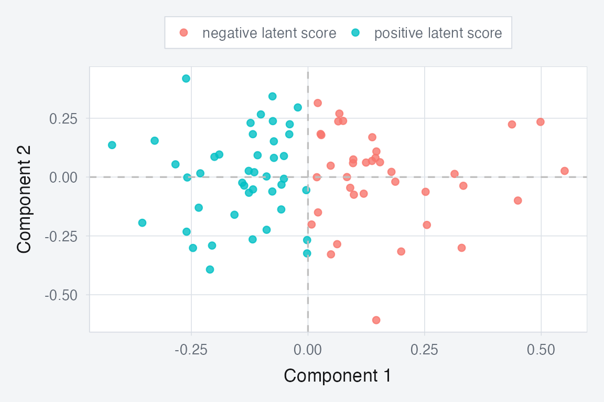

Multiblock Canonical Correlation Analysis
mcca.RmdWhy MCCA?
Use mcca() when you have several blocks measured on the
same observations and you care about the shared score space
rather than raw variance in the concatenated data. The method looks for
components that each block can project onto coherently, so it is a
natural choice when blocks differ in scale or dimensionality but should
still agree on the same latent structure.
If your main question is “what common signal do these blocks line up on?”, MCCA is often the right first model.
What does a quick fit look like?
library(muscal)
library(multivarious)
library(ggplot2)
sapply(blocks, dim)
#> clinical behavior imaging
#> [1,] 80 80 80
#> [2,] 16 20 18
fit <- mcca(blocks, ncomp = 2, ridge = 1e-6)
S <- multivarious::scores(fit)
stopifnot(all(dim(S) == c(n, 2)))
stopifnot(all(is.finite(S)))
cc <- cancor(
scale(Z, center = TRUE, scale = FALSE),
scale(S, center = TRUE, scale = FALSE)
)$cor[1:2]
stopifnot(all(is.finite(cc)))
stopifnot(min(cc) > 0.9)
round(cc, 3)
#> [1] 0.999 0.998
MCCA scores recover the shared low-dimensional structure. The coloring is derived from the first latent factor used to generate the blocks.
The canonical correlations above are the first sanity check. In this simulated example, the fitted scores recover the two shared latent directions very strongly.
What is the method actually doing?
MCCA builds a compromise score space that all blocks can project into. In the MAXVAR formulation used here, each block contributes a ridge-stabilized projection operator, and the shared components are the leading eigenvectors of their weighted sum.
That is why mcca() stays stable even when some blocks
are wide (p >> n) or close to rank-deficient after
centering.
What should you inspect after fitting?
sapply(fit$partial_scores, dim)
#> clinical behavior imaging
#> [1,] 80 80 80
#> [2,] 2 2 2
S_sum <- Reduce(`+`, fit$partial_scores)
max_diff <- max(abs(S_sum - S))
stopifnot(is.finite(max_diff))
stopifnot(max_diff < 1e-6)
max_diff
#> [1] 2.296627e-10Each block has its own partial score matrix. Their sum reproduces the compromise scores, so large disagreements across partial scores tell you where the blocks are pulling in different directions.
When should you reach for MCCA?
Use mcca() when:
- your blocks share the same rows,
- you want a common score space driven by cross-block agreement,
- some blocks are much wider than others, and
- you need ridge stabilization in high dimensions.
Use mfa() instead when you want a classical
variance-balancing factor model rather than a canonical-correlation
view.
Where next?
-
vignette("mfa")for variance-based multiblock integration -
vignette("aligned_mcca")for the same idea when blocks do not share the same rows -
?mccafor tuningridgeandblock_weights